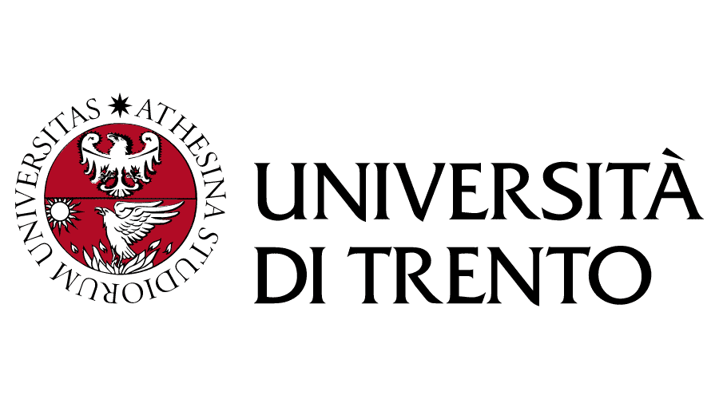

Division leader - Motostudent Project
Led a 5-member team to build the powertrain of a racing prototype.
I especially focused on the exhaust system.


Welcome to my digital portfolio.
Dive into a world of innovation, creativity, and expertise in mechatronics engineering.
I am an Italian engineer with a background in Industrial Automation and strong leadership experience gained through the Motostudent project. Currently, I am pursuing a Double Master’s degree in Mechatronics Engineering and Systems Engineering through the prestigious TIME program.
Passionate about exploring new cultures, I thrive in international environments where I can learn, adapt, and contribute with a global perspective. My long-term goal is to leverage engineering, particularly Robotics and Artificial Intelligence, to improve people’s lives. This aspiration drives my current thesis project, which focuses on developing innovative solutions to help individuals with cerebral palsy regain mobility.
I am eager to apply my technical expertise, creativity, and dedication to healthcare-related fields, where engineering can truly make a difference.
Brescia / Lisbon
Istituto Paola di Rosa
Focus on advanced maths & physics.
Università di Brescia • Sep ’18 – May ’22
Thesis: Design and dimensioning of an anthropomorphic robotic arm.
Università di Trento • Sep ’22 – Nov '25
Specialising in embedded control systems.
IST Lisboa • 2023 – Nov '25
Thesis: Hybrid ankle exoskeleton combining functional electrical stimulation & mechanical actuation.

Led a 5-member team to build the powertrain of a racing prototype.
I especially focused on the exhaust system.
Thanks to ProtoChallenge competition, I worked with a team of six students from the University of Trento in collaboration with the company NTP Nano Tech Projects s.r.l. The goal was to re-design some components (to reduced weight and to try Additive Manufacturing techniques of realization) of the NED-Digital Pathology machine, as well as to study an alternative configuration to fix internal issues.
I'm working as a tutor, teaching mathematics, physics, and chemistry to high school students.
I started as an animator, and thanks to my experience I became responsible for animation. I improved my skills in interpersonal relationships and in coordinating a team.
Initially, I managed orders and made deliveries for the Mimosa pizzeria. Later, I performed the same task for a larger company, the Sbaff restaurant.
I assisted and helped during the design and bureaucracy phases of the studio.
I participated at the finals of the Portuguese National competition TecStorm, with a team of 3 engineers, reaching the second place. It’s an hackathon aimed to the creation of a startup in three working days. Our startup (EnviroSync) was in the field of Sustainable Smart Construction. Our goal is to optimize energy efficiency using a system of multiple devices: thanks to several sensors we can collect data (i.e. air temperature, humidity, vibrations,...) that are constantly analyzed by a trained AI, able to send reports when detecting problems. Moreover, we also developed a website (online platform) where the user can access to live data and to the history of recordings, but also to choose between other functions, like instantly generating a report.

I participated at the finals of the Portuguese National competition TecStorm, with a team of 4 engineers. Our startup was in the field of Data–Driven Sustainable Mobility Solutions and we developed an app (ParkMe) able to predict the number of free slots in a parking, based on AI algorithms, in a certain area and at a certain time, both decided by the user, and allowing them to book it if needed. Moreover, we developed the Business Model, enriching me with new knowledge in the economic field, too.
Given a dataset with 25 features and 100.000 patients’ data, I developed several machine learning algorithms to predict heart attack risk.
SKILLS: python, data analysis, machine learning
Being the port of Shanghai the biggest and most crowded in the world, given the parameters of arrivals of the ships and the layout of the port, I tried to optimize the control and management system, to take the best decision in the quickest way.
SKILLS: python, decision making, problem solving
Me with a group of 3 other colleagues followed all the steps of creating a startup: from the initial brainstorming, through all the process to have a working final product, ready to be sold. Our startup was “SmartPot”, a smart vase able to feed plants thanks to machine learning algorithms fed from sensors’ data.
SKILLS: python, SolidWorks, 3d printing, team leading, team working, decision making, problem solving, economic knowledge
Given a set with several pictures of the nature, I had to develop an algorithm able to detect wildfires and distinguish between the intensity levels (just smoke, small fire, big fire), in order to contact the authorities.
SKILLS: Matlab
Using Matlab control tools my three colleagues and I were able to develop a controller such that the drone (Parrot MiniDrone) was able to take off, follow a given trajectory and land in complete safety.
SKILLS: Matlab, team leading, team working, Latex, problem solving
Using ROS (Robot Operative System) I was able to control a TurtleBot, first by scanning the room to have a map with the obstacles and then with autonomous drive it was able to reach any desired point and to avoid unexpected obstacles.
SKILLS: ROS, PowerPoint
Using a software called SIMIO, I had to create the model of a hospital in order to minimize its expenses and at the same time keep a high satisfaction level of the customers.
SKILLS: Simio, PowerPoint
I had to develop the software to replicate a 3–axis CNC machine, able to follow any given trajectory and to change tools when need, thanks to G–Code.
SKILLS: Python, G–Code, problem solving
The goal was to create a machine able to operate laser cutting on wood and steel, controlled by G–code. My team (a total of three people) was equipped with the laser, three DC motors, a control board and all the necessary tools.
SKILLS: G–code, C, team leading, team working, Latex, problem solving, hands–on working